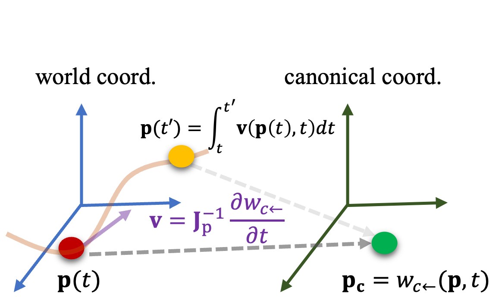
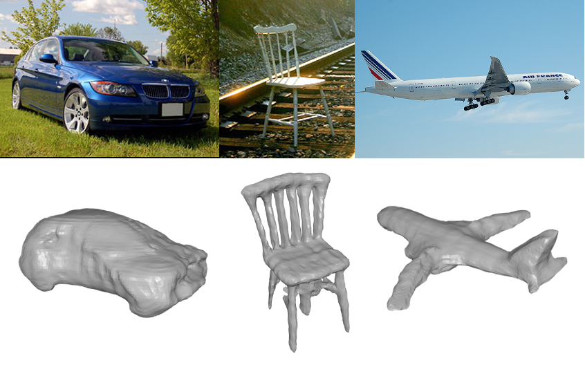
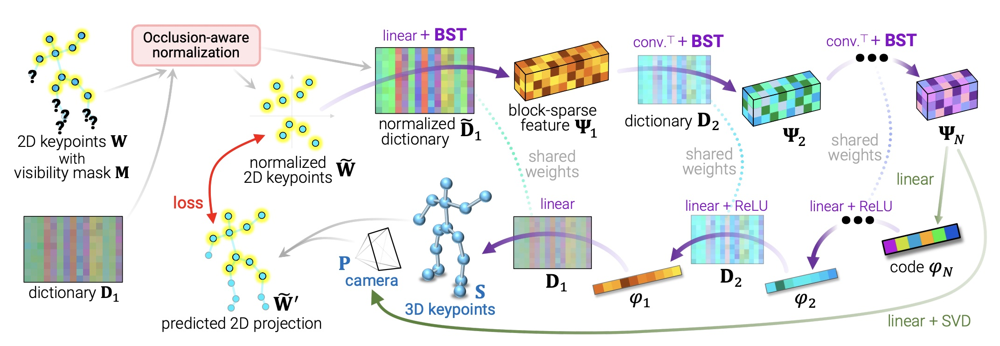
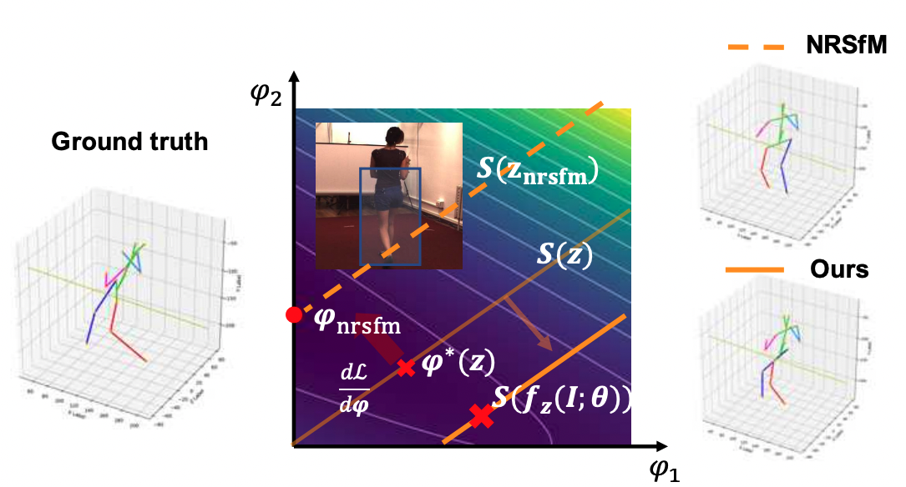
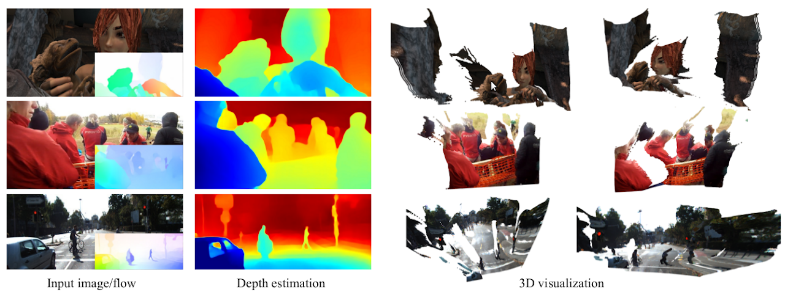
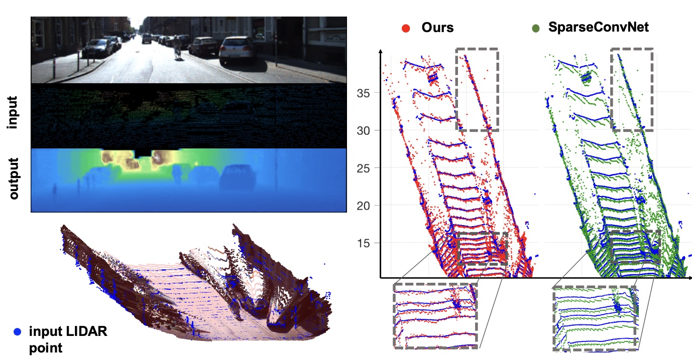

I am a research scientist at Snap Creative Vision Team, leading research in 4D reconstruction and generation.
I obtained my PhD degree from Robotics Institute of CMU, and was a member of CI2CV Lab led by Prof. Simon Lucey. Prior to CMU, I obtained my B.E. and M.S. degree from Shanghai Jiao Tong University.
If you are interested in collaboration or looking for research internship position, feel free to shoot me an email at cwang9[at]snapchat.com
Selected Publications & Manuscripts
*co-first author,†corresponding author
4Real-Video: Learning Generalizable Photo-Realistic 4D Video Diffusion Chaoyang Wang*†, Peiye Zhuang*, Tuan Duc Ngo*, Willi Menapace, Aliaksandr Siarohin, Michael Vasilkovsky, Ivan Skorokhodov, Sergey Tulyakov, Peter Wonka, Hsin-Ying Lee
in Submission
[
project
]
DELTA: Dense Efficient Long-range 3D Tracking for Any Video
Tuan Duc Ngo, Peiye Zhuang, Chuang Gan, Evangelos Kalogerakis, Sergey Tulyakov, Hsin-Ying Lee, Chaoyang Wang
ICLR 2025
[
project
]
GTR: Improving Large 3D Reconstruction Models through Geometry and Texture Refinement
Peiye Zhuang, Songfang Han, Chaoyang Wang, Aliaksandr Siarohin, Jiaxu Zou, Michael Vasilkovsky,
Vladislav Shakhrai, Sergey Korolev, Sergey Tulyakov, Hsin-Ying Lee
ICLR 2025
[
project
]
4Real: Towards Photorealistic 4D Scene Generation via Video Diffusion Models
Heng Yu*, Chaoyang Wang*, Peiye Zhuang, Willi Menapace, Aliaksandr Siarohin, Junli Cao, László A. Jeni, Sergey Tulyakov, Hsin-Ying Lee
NeurIPS 2024
[
project
]
SceneWiz3D: Towards Text-guided 3D Scene Composition
Qihang Zhang, Chaoyang Wang, Aliaksandr Siarohin, Peiye Zhuang, Yinghao Xu, Ceyuan Yang, Dahua Lin, Bolei Zhou, Sergey Tulyakov, Hsin-Ying Lee
CVPR 2024
[
project
]
3D VADER - AutoDecoding Latent 3D Diffusion Models
Evangelos Ntavelis, Aliaksandr Siarohin, Kyle Olszewski, Chaoyang Wang, Luc Van Gool, Sergey Tulyakov
NeurIPS 2023
[
project
]

Flow Supervison for Deformable NeRF Chaoyang Wang, Lachlan E. MacDonald, Laszlo A. Jeni, Simon Lucey
CVPR 2023 (Highlight)
[
project
]
RAC: Reconstructing Animatable Categories from Videos
Gengshan Yang, Chaoyang Wang, N dinesh reddy, Deva Ramanan
CVPR 2023
[
project
]
Neural Priors for Trajectory Estimation Chaoyang Wang, Xueqian Li, Jhony Kaesemodel Pontes, Simon Lucey
CVPR 2022
[
supp
]
Neural Trajectory Fields for Dynamic Novel View Synthesis Chaoyang Wang, Ben Eckart, Simon Lucey, Orazio Gallo
2021
[
arxiv
]
Older Publications
PAUL: Procrustean Autoencoder for Unsupervised Lifting
Chaoyang Wang, Simon Lucey
CVPR 2021
[
arxiv
]

SDF-SRN: Learning Signed Distance 3D Object Reconstruction from Static Images
Chen-Hsuan Lin, Chaoyang Wang, Simon Lucey
NeurIPS 2020
[
arxiv,
project
]

Deep NRSfM++: Towards Unsupervised 2D-3D Lifting in the Wild
Chaoyang Wang, Chen-Hsuan Lin, Simon Lucey
3DV 2020 (oral)
[
arxiv
]

Distill Knowledge from NRSfM for Weakly Supervised 3D Pose Learning
Chaoyang Wang, Chen Kong, Simon Lucey
ICCV 2019
[
arxiv,
project
]

Web Stereo Video Supervision for Depth Prediction from Dynamic Scenes
Chaoyang Wang, Simon Lucey, Federico Perazzi, Oliver Wang
3DV 2019
[
PDF,
project
]
Learning Depth from Monocular Videos using Direct Methods
Chaoyang Wang, Jose Miguel Buenaposada, Rui Zhu, Simon Lucey
CVPR 2018
[
PDF,
project
]

Deep Convolutional Compressed Sensing for LiDAR Depth Completion
Nathaniel Chodosh, Chaoyang Wang, Simon Lucey
ACCV 2018
[
PDF,
code
]
Deep-LK for Efficient Adaptive Object Tracking
Chaoyang Wang, Hamed Kiani, Chen-Hsuan Lin, Simon Lucey
ICRA 2018
[
PDF,
arXiv,
demo
]
Rethinking Reprojection: Closing the Loop for Pose-aware Shape Reconstruction from a Single Image
Rui Zhu, Hamed Kiani, Chaoyang Wang, Simon Lucey
ICCV 2017
[
PDF
]
Object Proposal by Multi-branched Hierarchical Segmentation
Chaoyang Wang, Long Zhao, Shuang Liang, Liqing Zhang, Jinyuan Jia, Yichen Wei
CVPR 2015
[
PDF,
VOC3007 test result
]
Binocular Photometric Stereo Acquisition and Reconstruction for 3D Talking Head Applications
Chaoyang Wang, Lijuan Wang, Yasuyuki Matsushita, Bojun Huang, Magnetro Chen, Frank K. Soong
INTERSPEECH 2013
[
PDF,
web,
demo,
code
]